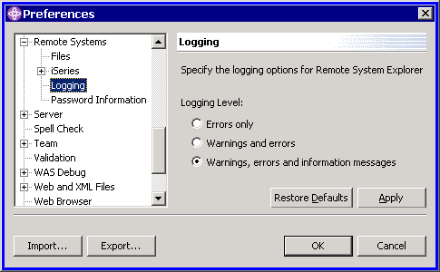

To use the RSE logging framework, you must first decide if you want your own log file, or want to use the common RSE log file.
The log file support is encapsulated in a separate plugin, org.eclipse.rse.logging, which defines the primary org.eclipse.rse.logging.Logger class that manages the log file. This log file support offers the ability to log the following types of log messages:
To define your own logging file, in your plugin class:
protected static Logger log = null;
if (log == null) log = LoggerFactory.getLogger(this);
public static void logInfo(String message)
{
log.logInfo(message);
}
public static void logWarning(String message)
{
log.logWarning(message);
}
public static void logError(String message)
{
log.logError(message, null);
}
public static void logError(String message, Throwable exception)
{
log.logError(message, exception);
}
public static void logDebugMessage(String prefix, String message)
{
log.logDebugMessage(prefix, message);
}
LoggerFactory.freeLogger(this);
Typically your code will write a healthy number of messages to the log file, to help you determine what went wrong in an error situation in production. However, since this can result in a large number of messages in the log file, it is recommended that you offer the user's a preference page in which they can specify the types of messages to record in the log file, which should default to error messages only. In the event of a problem, they can then turn on a more verbose logging option and re-produce the problem, sending the log file to you for additional information. For example, for the Remote System Explorer, this preference page is supplied:

To log your messages to the common RSE log file in .metadata\plugins\org.eclipse.rse.ui, either base your plugin class on the org.eclipse.rse.core.SystemBasePlugin class and use the inherited logging methods, or instead of instantiating your own Logging object, re-use the RSE-supplied logging object by calling getDefault().getLog() in the org.eclipse.rse.ui.RSEUIPlugin class.